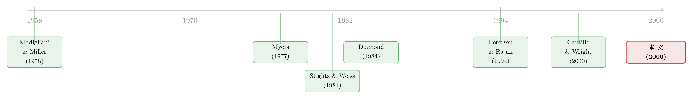

杠杆的另一半秘密：不是你想借多少，而是谁肯借给你
本文读的是 Faulkender & Petersen (2006, Review of Financial Studies)：几十年的资本结构实证，都默认「公司的杠杆 = 公司想借多少债」。这篇文章把被忽略的另一半——「市场肯借给它多少」——放回了回归方程。结论很硬：能进入公开债券市场（用「有没有债券评级」来度量）的公司，杠杆显著更高；即便控制了所有教科书里的公司特征、又用工具变量处理了评级的内生性，有融资渠道的公司依然多借了约 35% 的债。
1 一个被忽略了半个世纪的问题
先说一个让无数公司金融学者隐隐不安的「异象」。
按照 权衡理论 (tradeoff theory)，一家公司应该把税盾、财务困境成本、错误定价、激励效应统统算进去，解出一个「最优杠杆」，然后通过发债或回购股票走到那里。这套逻辑非常优美，实证文献也一直在兑现它的承诺——找各种公司特征（盈利能力、有形资产、成长机会、边际税率……）去解释杠杆，往往真的显著。
可是 Graham (2000) 算了一笔账后发现：很多公司看起来「欠债欠得太少了」。按债务税盾的估计，它们只要再多借一点钱、少交一点税，股东价值就能凭空多出一大块。换句话说，这些公司像是把白花花的银子摆在桌上，却选择不拿。
这就引出一个尖锐的问题：它们是不想拿，还是拿不到？
教科书的隐含假设一直是前者。用文章里的话说，传统资本结构实证默认——资本的供给在「正确的价格」上是无限弹性的，公司想借多少就能借多少，资本成本只取决于项目风险。于是公司的杠杆，完完全全是它对债务的需求的函数。
但这真的成立吗？
首先，让我们回想一下到底是什么「摩擦」让资本结构有意义。信息不对称、投资扭曲——正是这些东西让 MM 定理 (Modigliani–Miller, 1958) 失效，让杠杆开始「有所谓」。可问题在于：同样这批摩擦，也会让贷款人有时干脆拒绝放贷。Stiglitz and Weiss (1981) 早就说过，信息不对称下贷款人会信贷配给 (credit rationing)——不是靠涨价出清，而是直接卡住数量。
于是一个自然的推论浮出水面：如果让资本结构「相关」的摩擦，同时也决定了一家公司能不能借到钱，那么当我们估计杠杆时，就不能只放需求侧的变量，还必须放供给侧的约束。这正是本文的出发点。
2 需求与供给：把资本结构方程改写一遍
本文没有一个花哨的结构模型，但它对「实证该怎么写」做了一个非常关键的概念性改写，值得一步步看清楚。
把观测到的债务量，理解成一个市场出清的结果——它同时受需求和供给驱动，二者都依赖于债务资本的价格：
$$Q_{\text{demand}} = \alpha_0\,\text{Price} + \alpha_1 X_{\text{demand factors}} + \varepsilon_{\text{demand}}$$
$$Q_{\text{supply}} = \beta_0\,\text{Price} + \beta_1 X_{\text{supply factors}} + \varepsilon_{\text{supply}}$$
第一行是需求：X_demand factors 是任何抬高「债务净收益」的公司特征——更高的边际税率、更低的财务困境成本，都会让公司想多借债。第二行是供给：X_supply factors 刻画的是贷款人愿意借出多少。
接着，一个自然的问题是：如果资本供给真的无限弹性（传统假设），会怎样？那意味着公司在「正确的价格」上能借到任意多的债，观测到的债务量就等于需求量，供给侧那一行可以彻底忽略——只有需求因素能解释杠杆的差异。这正是过去几十年实证的默认设定。
但真正关键的一步在于：如果没有公开债券市场渠道的公司确实被贷款人卡住了数量（私人贷款人并不能完全替代缺失的公开债），那么把需求和供给联立、消掉价格，就能写出一个简约式 (reduced-form) 方程，量和价各自只是需求因素与供给因素的函数。文章自始至终跑的，就是下面这个方程：
于是整篇文章的赌注，就压在 γ_S 这个系数上：如果「能否进入债券市场」在控制了所有需求因素之后仍然显著为正，那就说明——决定杠杆的，不只是公司想借多少，还有市场肯借多少。
3 识别策略：评级，是供给的影子吗？
文章用「公司有没有债券评级（bond rating，或商业票据评级）」来代理「它有没有进入公开债券市场的渠道」。这个代理为什么靠谱？因为在那些手工核对过债务来源的小样本里，「有评级」和「有公开债在外」几乎是一回事：Cantillo and Wright (2000) 的数据里，5529 个观测中只有 18 个（0.3%）是「有评级却没有公开债」，135 个（2.4%）是「有公开债却没评级」。
但这里埋着一个大坑，也是全文最要命的识别问题：评级是内生的。
在方程里，「有评级」这个变量上的正系数，可能来自两种完全不同的东西——要么是本文想抓的供给效应（有渠道 → 能多借），要么是某种和评级相关、却没被观测到的需求因素（爱借债的公司恰好也更可能去要个评级）。这两者会污染在一起。
那怎么办？文章用了两道防线。
第一道：把需求侧控制干净。 如果我们能用其他自变量完全吸收掉「债务需求」的变异，那么剩下的评级变量就只在度量供给。于是文章塞进所有理论和既有实证认为决定杠杆的公司特征——然后看评级系数还在不在。
第二道：直接对供给建模，用工具变量。 先预测「哪些公司能进入公开债券市场」，从而把「拿不到评级的公司」和「不想要评级的公司」区分开。这一步至关重要——文章用 Figure 1 画了一棵决策树：公司先有没有市场渠道（不可观测）→ 有渠道的再选择要不要发公开债、要评级 → 再选杠杆 → 最后才被打上一个评级。那些「有渠道但选择不发公开债」的公司，会被错误地归到「没渠道」一类里。工具变量要做的，就是把这条暗线掰直。
一句话抓住识别的灵魂：本文不怕「有评级的公司天生不一样」，它怕的是「这种不一样恰好解释了杠杆差异」。两道防线，都是冲着这个担忧去的。
（关于「公司为什么主动选择公开债 vs 银行债」这条平行的文献，可参见《借公开债，是为了躲开银行的眼睛》。）
4 数据
- 样本：
Compustat1986–2000 年，含工业/全覆盖文件与研究文件。 - 筛选：剔除金融业（6000s SIC）与公共部门（9000s SIC），剔除销售额或资产低于
$1 million的观测。研究对象都是上市公司——理论上它们比文献常研究的私人小企业更不该被信贷配给，因此这是一个保守的样本。 - 杠杆度量：债务/资产比，债务含长期与短期（包括长期债务的当期部分）。分母分别用账面价值 (BV) 和市场价值 (MV)，其中 MV 资产 = BV 资产 − BV 普通股 + MV 普通股。稳健性里还用了利息保障倍数 (interest coverage)。
- 样本量：Panel A 共
77,659个公司-年，其中19.0%有评级；只看正债务的 Panel B 为69,589个公司-年，21.1%有评级。
这里有一个本身就很有意思的事实：公开债其实非常罕见。 在任一年份，本文样本里只有约 19% 的公司能进入公开债券市场（最低 1995 年的 17%，最高 2000 年的 22%）。但若按金额加权，这 19% 的公司却发行了在外债务的 78%。也就是说，公开债是少数大公司的游戏；对绝大多数公司——哪怕是上市公司——它根本不是一个可选项。
5 主要结果
先看最朴素的对比（Table 1）。有评级 vs 没评级，杠杆差距大得惊人：
- 市值口径：有渠道的公司债务比
28.4%，没渠道的17.9%，差10.5个百分点（p < .01）。换算一下，一个评级把公司的债务抬高了59%：(28.4 − 17.9)/17.9。 - 账面口径：
37.2%vs23.5%，差13.8个百分点。 - 这个差距在整条分布上都成立：中位数公司，有评级把市值债务比从
12.0%抬到25.7%（+13.7pp）。 - 它在每一年都成立：1986–2000 年间，市值口径的差距在
5.7%到13.7%之间波动，账面口径在7.2%到18.7%之间——而且永远统计显著。
接着，一个自然的反驳是：这会不会只是因为「有评级的公司和没评级的公司本来就是两种公司」？文章老老实实地承认——它们确实不一样（Table 2）。有评级的公司规模大得多（按对数资产/销售算，约大 300%，p < .01）、有形资产更多（PP&E 占账面资产 42% vs 31%）、更老、研发支出更少（占销售 1.8% vs 6.1%）、市值账面比更低；而且债务期限更长（Table 3）。
这些差异恰恰是问题所在：上面每一条，都同时是「需求侧」可以讲的故事——大公司、有形资产多、成长机会少的公司，本来按权衡理论就该多借债。所以单变量对比根本无法分辨：是供给（有渠道），还是需求（这类公司本就爱借债）？
于是来到全文的核心检验：把这些公司特征全部控制进回归之后，评级系数还在吗？
在了。文章反复强调，即便控制了理论与既有实证认为决定杠杆的公司特征，有公开债市场渠道的公司，杠杆依然在经济与统计上都显著更高。这是「第一道防线」的产出。
6 但评级是内生的——工具变量这一步
控制变量再多，也堵不住一个质疑：万一还有没被观测到的需求因素，既推高杠杆、又让公司去要评级呢？
这就是第二道防线、也是摘要里那个 35% 的来处。文章对「有没有评级」做工具变量估计，先预测哪些公司能够进入公开债券市场，借此把「拿不到评级」和「不想要评级」分开——确保识别出来的是一个供给因素，而不是一个被错认的需求因素。
结果：即便在工具变量框架下、处理掉评级的内生性，有渠道的公司依然多借了约 35% 的债。这个量级比单变量的 59%（Panel A）或 39%（Panel B，按 8.0/20.5 算）要小——这完全符合直觉，因为控制和工具变量正是要把那部分「假的」需求效应剥掉，剩下的才是干净的供给效应。
还有一个不该忽视的细节，它让结论更可信而非更可疑：度量误差会让估计偏向于零。因为 Compustat 只收录 S&P 的评级，那些只被 Moody's 或 Fitch 评级的公司会被错判为「没评级」（不过 Ljungqvist, Marston, and Wilhelm (2006) 显示 97.8% 的公开债发行被 S&P 评级，错判应该很小）。这类错分会把「有渠道」和「没渠道」两组的债务比往中间拉，真实差距只会比估计的更大。换句话说，本文给的是一个保守下界。
7 文献脉络
把这篇文章放进谱系里，它的位置其实很清楚。
一切从 Modigliani and Miller (1958) 开始——在他们的世界里，资本结构无关紧要，而这个「无关」恰恰建立在「供给无限弹性」之上。后来的权衡理论与一系列需求侧实证（如 Myers (1977) 对公司借债决定因素的分析）把注意力全压在需求：什么样的公司想多借债。
与此平行，另一条线在研究市场摩擦本身。Stiglitz and Weiss (1981) 给出信贷配给；Diamond (1984) 的委托监督、Fama (1985) 的「银行有什么不同」，解释了金融中介为何会内生地出现——它们专门收集借款人信息、做信贷决策。Petersen and Rajan (1994) 用实证记录了「关系」如何放松融资约束。再往后，Cantillo and Wright (2000)、Houston and James (1996) 等开始正面研究公司在银行债与公开债之间如何选择。

本文的贡献，是把这两条线焊在一起：它没有去研究「公司选哪种债」，而是回过头把「供给约束」这个变量，硬塞进了那个被研究了几十年、却只装着需求因素的资本结构回归里——并证明这个变量不可省略。这是一个看似简单、却改变了整个实证设定的动作。
（这条「供给侧 / 市场约束」如何决定公司财务政策的思路，与《同行不是均匀的一团：把「资本结构会传染」这件事，重新量了一遍》、以及《越能谈，越借不到：把「债该长什么样」算回一场讨价还价》都遥相呼应。）
8 评论与延伸（Q&A + 研究方向）
(a) 几个可能的疑问
Q：用「有没有债券评级」来代理「有没有公开债市场渠道」，会不会太粗糙？
文章自己承认两者不完全等同，但给出了强证据：在手工核对过债务来源的样本里，「有评级却无公开债」和「有公开债却无评级」都只占百分之零点几到二点几。更重要的是，代理误差是经典度量误差，会让系数偏向零——所以它只会让真实的供给效应被低估，而不会凭空造出一个效应。
Q：35% 和单变量的 59% 差这么多，是不是说明效应其实很脆弱？
恰恰相反。59% 是没控制任何东西的生差距，里面混着大量需求侧故事（大公司本就爱借债）；35% 是控制了公司特征、又用工具变量剥掉内生性之后剩下的。差距缩小正是「把假效应挤出去」的标志，剩下的 35% 反而更可信。
Q：样本是上市公司，结论还能推广吗？
这其实是把刀刃对着自己。上市公司理论上最不该被信贷配给——它们大、透明、可发股。能在这样一个保守样本里都找到显著的供给效应，对私人企业、小企业而言效应只会更强。这是一个「连最不该出现的地方都出现了」的论证。
Q：会不会是「有评级的公司本来就值得借更多债」（即评级真在度量需求）？
这正是内生性担忧的核心，也是文章设计第二道防线的理由。工具变量的关键，是用「能不能拿到评级」去区分「拿不到」与「不想要」——前者是供给约束，后者是需求选择。只要工具捕捉的是「能否进入市场」而非「想不想多借债」，识别就站得住。当然，工具的外生性本身仍是读者该追问的地方。
Q：私人债（银行贷款）不是可以替代公开债吗？为什么没渠道就一定少借？
文章的前提正是「私人贷款人不能完全替代缺失的公开债」。银行的监督与重组是有成本的，要转嫁给借款人（更高利率），而且监督也消不掉全部信息不对称，配给依然可能发生。所以失去公开债这条供给线，无论通过数量渠道（贷款人肯借得更少）还是价格渠道（更贵于是少借），都会压低杠杆。
Q：这是否意味着 Graham (2000) 的「公司欠债太少」之谜被解开了？
它提供了一个有力的替代解释：那些看起来「把钱留在桌上」的公司，可能不是不想借，而是借不到。本文没有直接重做 Graham 的税盾计算，但它把「拿不到」这个可能性，从口头猜想变成了带工具变量的实证证据。
(b) 几个可能的研究问题与提案
1. 把「评级」换成更细的供给冲击。
【经济故事】「有无评级」是个粗糙的二元代理。如果能找到一个外生改变某些公司公开债渠道的冲击（如评级机构覆盖范围扩张、某类债被纳入央行合格抵押品清单），就能更干净地识别供给效应。 【可行性】中。央行合格抵押品清单的变更是现成的准自然实验（参见《央行的「合格清单」：一只债券一旦能抵押，会发生什么？》），数据可得；难点在于把「渠道变化」与同时发生的需求变化分开。
2. 外资持有人作为「供给侧」的另一条暗线。
【经济故事】本文把供给约束落在「能否进入公开债市场」。一个自然延伸是：谁在买这些债也构成供给。外资进入一国公司债市场，相当于给本地发行人新开了一条供给线，应当抬高其杠杆能力。 【可行性】中到高。可用 TRACE + 跨境持仓数据（如 TIC、各国央行持仓表），以「某类债被纳入全球指数、引发外资被动配置」作为外生需求冲击，识别供给放松对发行人杠杆的因果效应。识别策略与本文一脉相承。
3. 信贷周期中的供给效应是否时变？
【经济故事】如果杠杆有一部分由供给决定，那么在信用收缩期，「有渠道」与「没渠道」公司的杠杆差距应当扩大——市场关门时，渠道更值钱。 【可行性】高。本文已是 1986–2000 的面板，直接把评级×宏观信用状况的交互项加进回归即可，2008 与 2020 两次危机提供了天然的强识别窗口。
4. 公开债渠道与债务期限的联合决定。
【经济故事】Table 3 显示有评级的公司债务期限更长。期限和数量很可能是被同一个供给约束联合决定的——能进公开市场，既能多借、又能借得更长。 【可行性】中。需要把杠杆与期限放进联立框架，数据上 Compustat 的「未来各年到期债务」字段够用，难点在于两个内生选择的同时识别。（与《飞机要换，债也要「换」：把「期限匹配」拆回资本的年龄》的视角可以对话。）
5. 「拿不到」与「不想要」的福利账。
【经济故事】本文把两类「没评级」的公司在概念上分开了，但没有量化「拿不到」那一组的福利损失——它们因为借不到债，放弃了多少正 NPV 项目？ 【可行性】低到中。需要结构估计或一个能识别「被配给」公司的工具，再把缺失的投资/价值损失算出来；数据要求高，但若能做成，是对 Graham 之谜的直接回应。
我的判断
这篇文章的贡献不在技巧，而在视角的纠偏：它指出整个资本结构实证传统都漏掉了方程的一半，并用一个简单到几乎「显然」的变量把它补了回来——而且补回来之后，效应大得无法忽视（控制 + 工具变量后仍有 35%）。这种「重新定义该往回归里放什么」的论文，影响力往往比一个新估计量更持久。
对识别，我最在意的是两点。其一，工具变量的外生性：用来预测「能否进入债券市场」的工具，必须真的只影响供给、不通过任何渠道影响公司对债务的需求——这在公司金融里几乎是最难满足的排他性约束，文章的说服力很大程度上取决于这一步是否站得住。其二，「有无评级」终究是个二元代理，它把「渠道」压缩成了 0/1，丢掉了渠道深浅的连续变异。
后续我最想看到的，是把「供给」从一个二元哑变量，升级成一个连续、且有外生冲击的度量——无论是来自外资持有人的进入、合格抵押品清单的扩张，还是指数纳入引发的被动需求。本文证明了「供给重要」；下一步该回答的是「供给松一寸，杠杆动几分」。
参考文献
- Cantillo, M., and J. Wright (2000). How Do Firms Choose Their Lenders? An Empirical Investigation. Review of Financial Studies 13(1), 155–189.
- Diamond, D. (1984). Financial Intermediation and Delegated Monitoring. Review of Economic Studies 51(3), 393–414.
- Diamond, D. (1991). Monitoring and Reputation: The Choice Between Bank Loans and Directly Placed Debt. Journal of Political Economy 99(4), 688–721.
- Fama, E. (1985). What's Different about Banks? Journal of Monetary Economics 15(1), 29–36.
- Faulkender, M., and M. A. Petersen (2006). Does the Source of Capital Affect Capital Structure? Review of Financial Studies 19(1), 45–79.
- Graham, J. R. (2000). How Big are the Tax Benefits of Debt? Journal of Finance 55(5), 1901–1941.
- Houston, J., and C. James (1996). Bank Information Monopolies and the Mix of Private and Public Debt Claims. Journal of Finance 51(5), 1863–1889.
- Ljungqvist, A., F. Marston, and W. Wilhelm (2006). Competing for Securities Underwriting Mandates: Banking Relationships and Analyst Recommendations. Journal of Finance.
- Modigliani, F., and M. Miller (1958). The Cost of Capital, Corporation Finance and the Theory of Investment. American Economic Review 48(3), 261–297.
- Myers, S. C. (1977). The Determinants of Corporate Borrowing. Journal of Financial Economics 5(2), 147–175.
- Petersen, M., and R. Rajan (1994). The Benefits of Lending Relationships. Journal of Finance 49(1), 3–37.